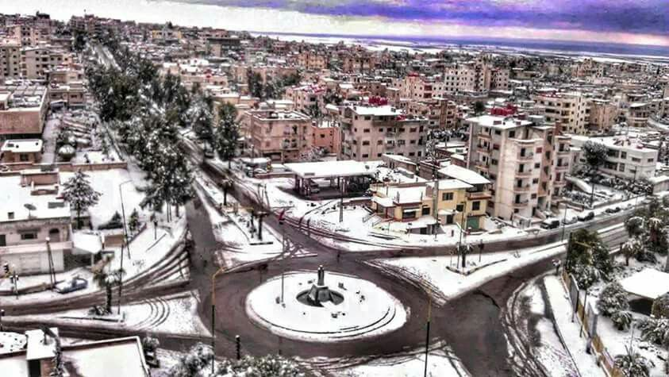

محافظة السويداء
: تفاصيل عن محافظة السويداء
السُوَيْدَاء، مدينة في سوريا وهي مركز محافظة السويداء، وتقع على بعد 100 كم جنوب مدينة دمشق، وتتربّع فوق قمم سلسلة جبلية بركانية خامدة يطلق عليها نسبة للسكان المحليين للجبل،
ويتميز الجبل بجمال الطبيعة والمناخ المعتدل البارد صيفاً والبارد جداً في الشتاء وتتساقط الثلوج على أغلب المرتفعات الجبلية، وترتبط المحافظة بشبكة
